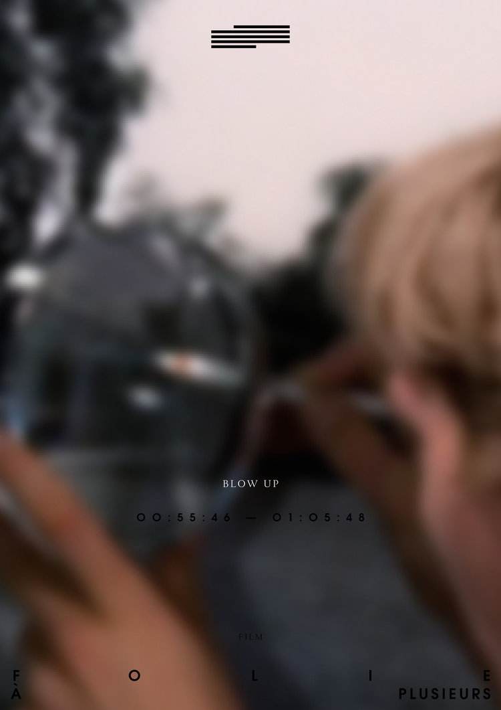
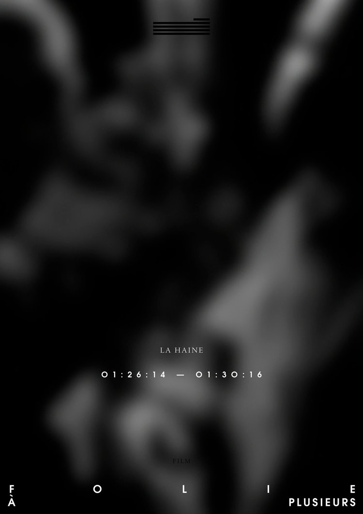
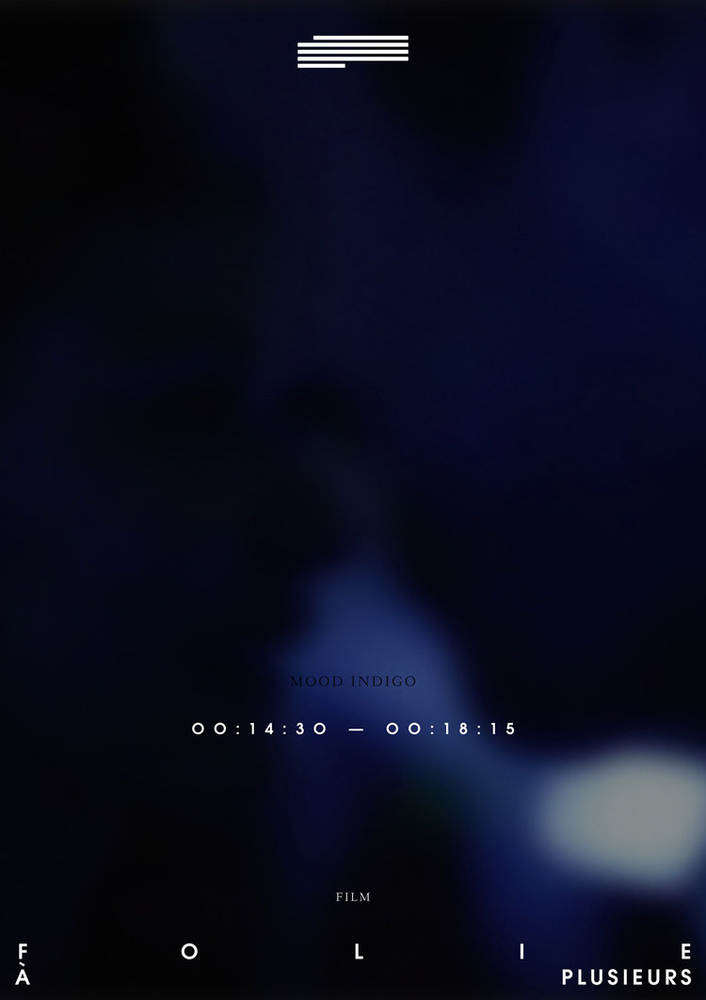
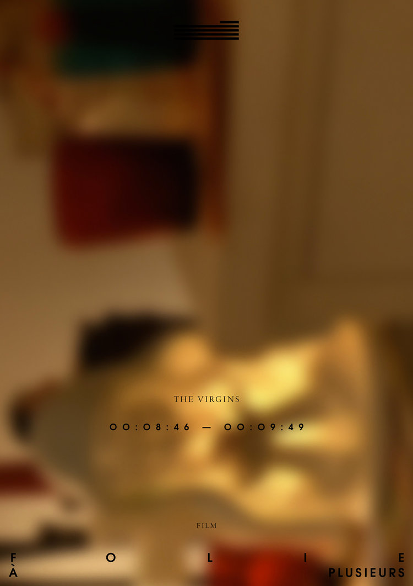
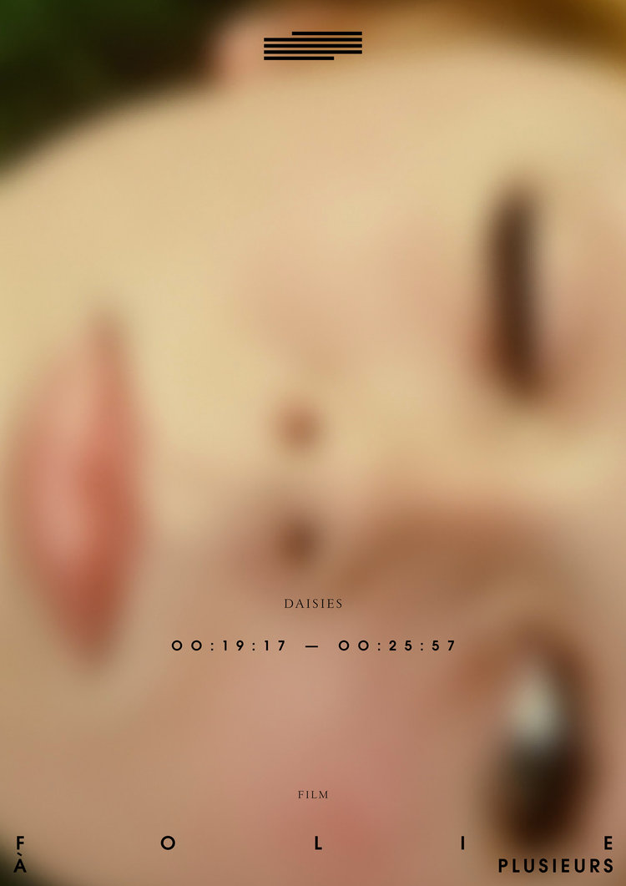
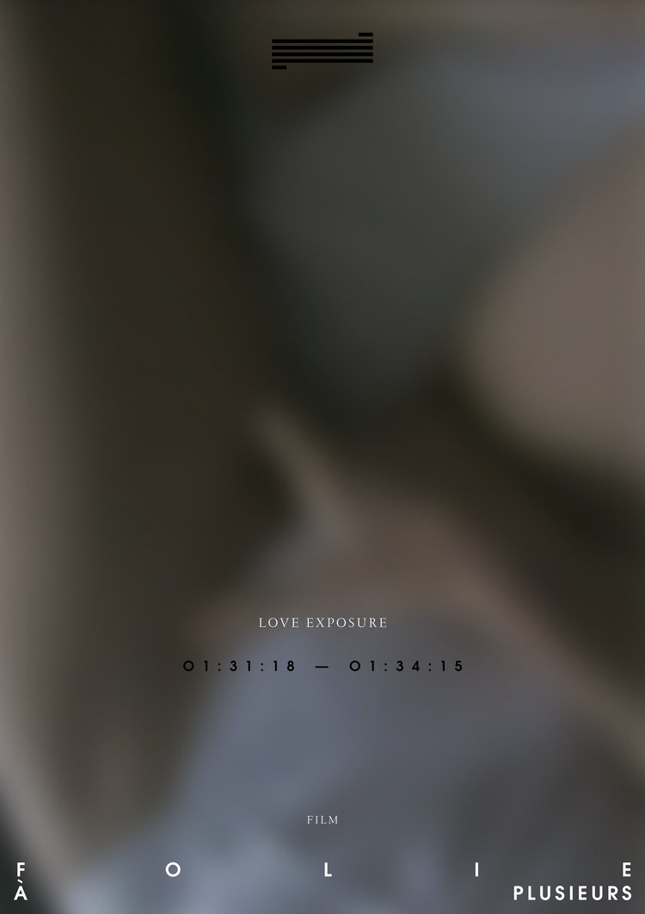
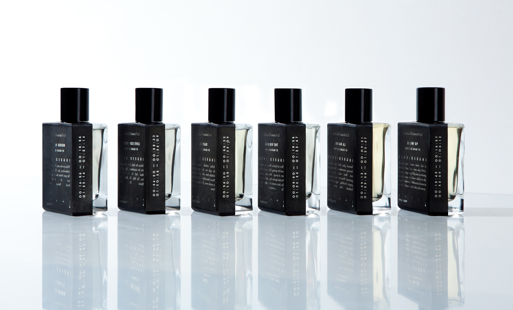

Le Cinema Olfactif
The film project Le Cinema Olfactif was launched in 2014. I stated curating the cinema program shortly after it was developed by the creative director of the house, Kaya Sorhaindo and ended my practice there in 2016. It represented an ongoing creative collaboration between Soho House and FOLIE À PLUSIEURS that brought together the mediums of film and perfumery to create a new form of sensory engagement. For selected films in the Soho House cinema program, a scent was created by a visionary perfumer out of a personal response to moments in a film. This scent was then incorporated into the viewer experience during the film screening and became a part of an archive of scents under the FOLIE À PLUSIEURS olfactive collection.
The project encourages viewers to extract more from a cinematic experience, and explores a gamut of emotional responses that can be evoked in an environment where visual, audio and scent come together to tell a story. Apart from curating the project, my specific responsibilities included managing the communication with artists and vendors for production of artworks and scents, logistics, managing film screenings in different locations in Europe, support with managing the production of marketing / promotional events / product related events.
You can find more about it here – https://www.folie.space/
     